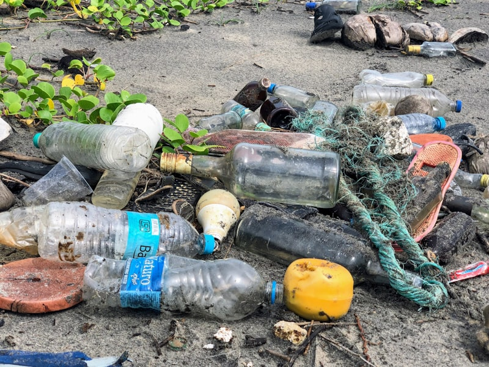
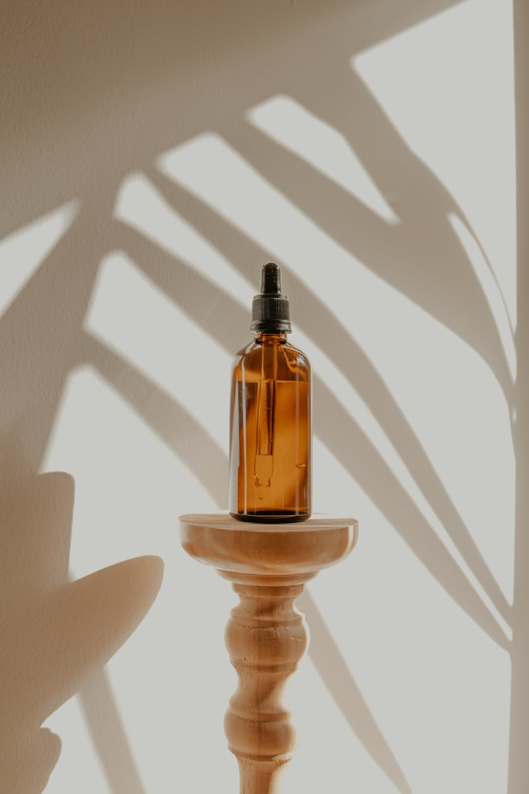

Atelier Notes & Outerwear Trends

Comfort Journal

How our master cutlers set iron heat scales, tape pressure points, and verify seals.
Read Journal →
Understanding staple length microns, dual warp yarn locks, and alpine thermal drapes.
Read Journal →
How to clean gore membranes, re-wax outer faces, and store coats in cedar chests.
Read Journal →
Exploring rain simulators, hydraulic nozzles, sound filtration curtains, and bench lighting.
Read Journal →
From early waterproof canvas capes to modern tailored cashmere alpine overcoats.
Read Journal →How our carpenters select birch blocks, drill holes, and wax horn buttons by hand.
Read Journal →How to pair copper zippers, slate grey lapels, and snow backdrops for photo shoots.
Read Journal →
How our hardware engineers forge solid copper teeth, engrave tabs, and set alignments.
Read Journal →
How to cushion down chambers, wrap merino coat shoulders, and build wooden crates.
Read Journal →
How double-back elastic ribs inside cuffs reduce cold drafts without restriction.
Read Journal →
An analysis of cold-pressed oil coatings, timber bonding, and natural DWR performance.
Read Journal →
How to fold heavy parkas, select organic canvas envelopes, and build cedar crates.
Read Journal →